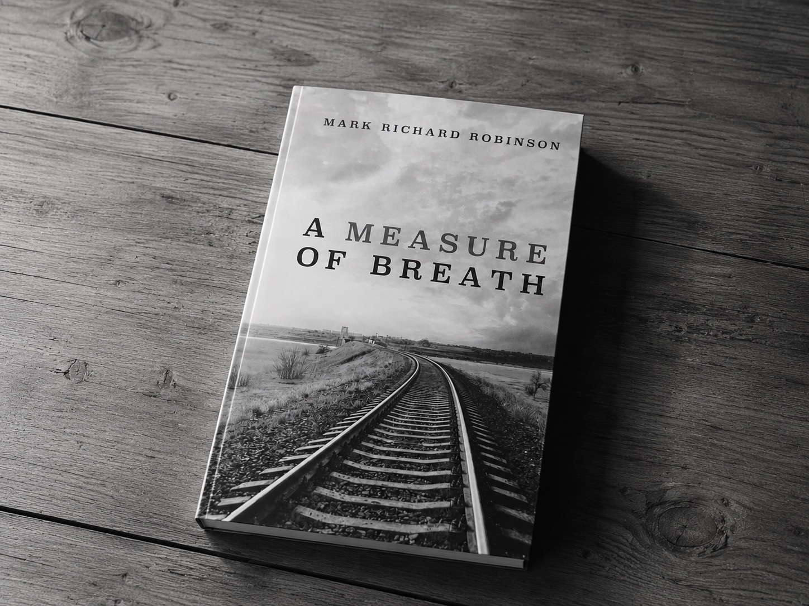

Minister · Writer · Artist · Public theologian
Mark
Richard
Robinson
A lover of God and follower of Christ.
Writing, theology, and public reflection shaped by the God revealed in Jesus Christ and the hope of God’s future.
Latest Reflection
February 2026
Love Older Than Death
A reflection on fear-shaped theology, the cross as exposure, resurrection hope, and the love of God that outlives violence.
Read the reflection →
Featured Book
Now available
A Measure of Breath
A contemplative novel of survival, memory, faith, justice, and the stories our bodies carry long after words have failed.
Mark Richard Robinson
Essays, visual reflections, and the continuing What Breath Remembers series can also be found on Instagram.
@markrobinsonis →